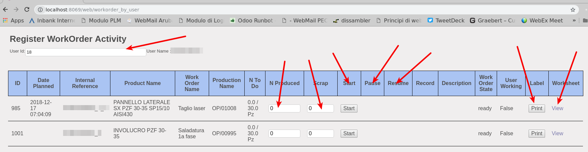
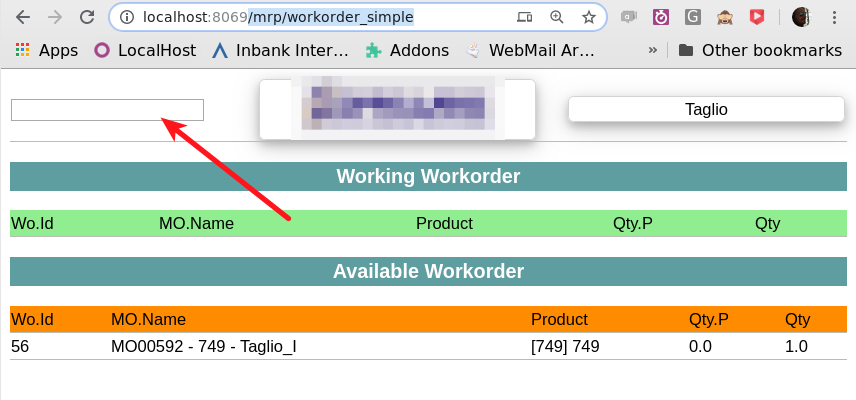
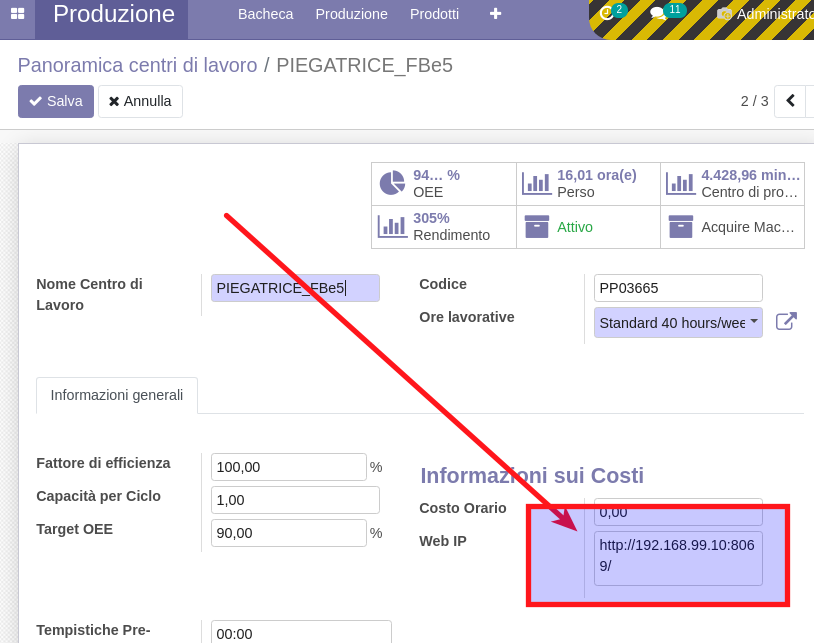

<section class="oe_container">
    <div class="oe_row oe_spaced">
        <div class="oe_span12">
            <h2 class="oe_slogan">Omnia Workorder Machine Communication<br></h2>
        </div>
        <div>
	        <h3>
	        <p>You have two interface to use in order to manage your workorders</p>
	        Using the <b>http://server:port/web/workorder_by_user</b> path you will redirect on the worksheet page
	        </h3>
	        
	        <br>
	        <ol>
	            <li>Here you can perform several operation related to the work order</li>
	            <li>You can write the id of the user and the assigned task will be prompt</li>
		        <li>You can start the job</li>
		        <li>you can stop the job</li>
		        <li>Register a scrap</li>
		        <li>Register an activity</li>
		        <li>View the pdf labels</li>
		        <li>View the worksheet</li>
	        </ol>
        </div>
        <div>
        <h3>
        Using the <b>http://server:port//mrp/workorder_simple</b> path you will redirect on the workorder page
        </h3>
        
        </div>
        <br>
        <ol>
            <li>Here you can perform a simple operation</li>
            <li>Writing the id of the workorder in the input box, you will start the workorder</li>
            <li>In a stardted workorder, if you put the id the workorder will be closed</li>
        </ol>
        In order o see the workorder in the web page the workorder must be activated and you need to fill up the workcenter with the ip of  the machine that need to see the webpage
        <br>
        
    </div>
</section>
